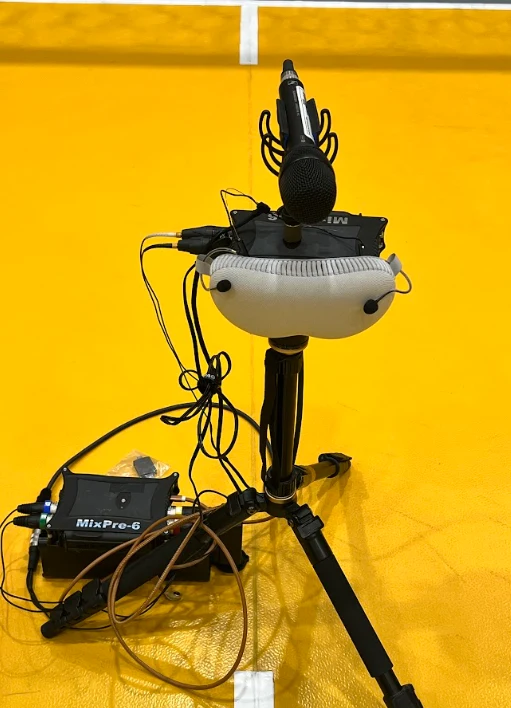
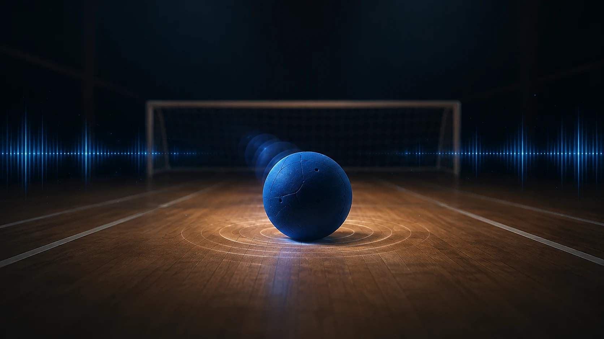
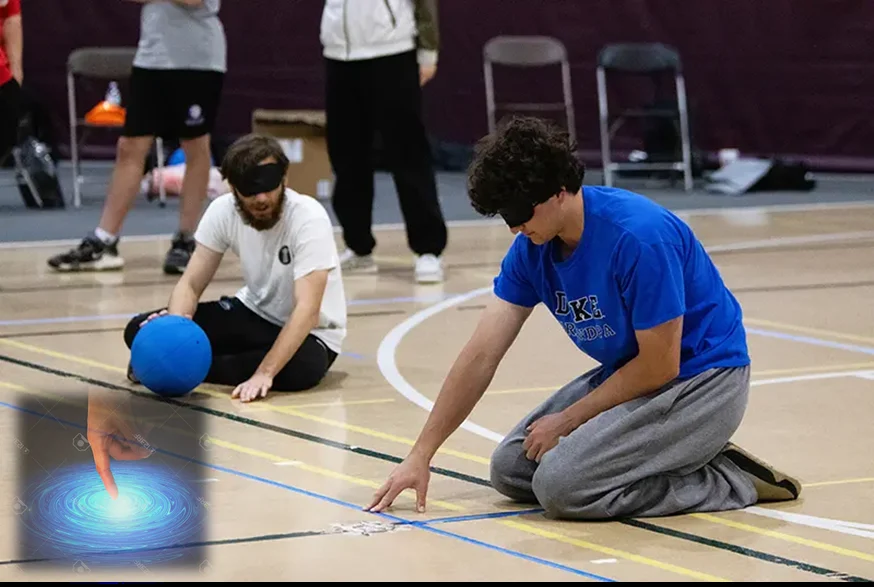
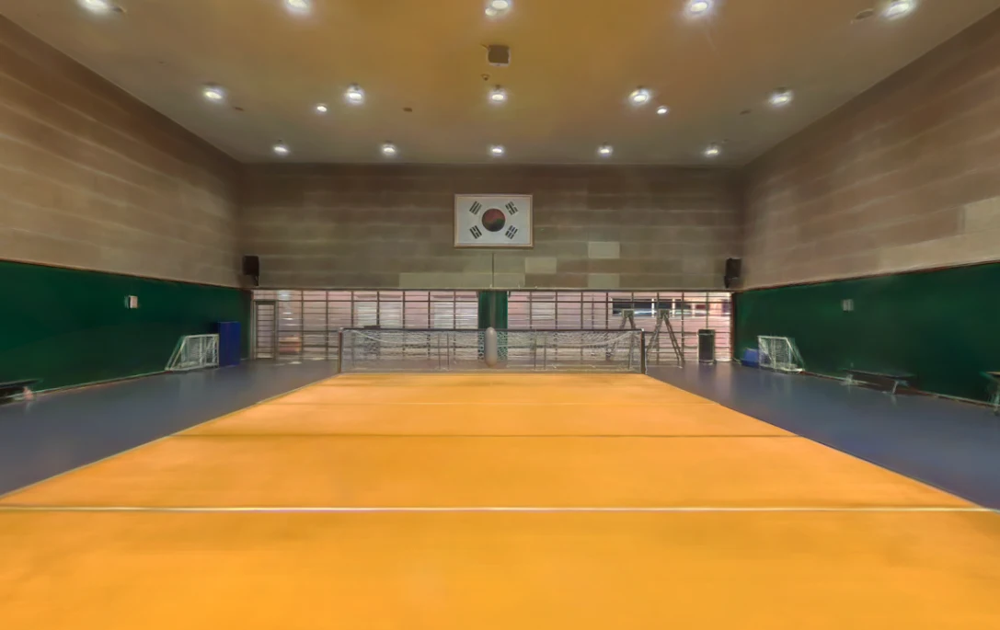
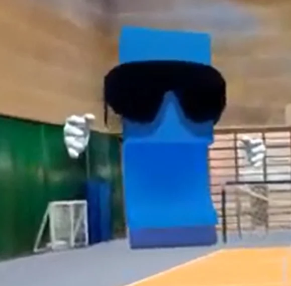

02 / SOUND공의 움직임을 담은 소리
투구 코스와 기술 유형에 따른 실제 음향 약 100건을 확보했습니다. 공의 방향과 거리, 바운스의 단서를 공간음향으로 전달합니다.
FIELD RECORDING · SPATIAL AUDIO
AN XR EXPERIENCE BY 조각모음
소리의 방향을 찾고, 촉각으로 위치를 느끼고, 몸으로 반응하다.
골볼을 통해 시각장애인의 공간인지 방식을 경험하는 XR 콘텐츠.
01 — WHY SPATIAL X
골볼 선수는 공의 소리와 코트의 촉각적 단서를 읽고, 빠르게 판단하며 움직입니다.
Spatial X는 이 감각과 의사결정의 과정을 XR로 옮깁니다. 시각 정보가 제한된 상황에서 청각과 촉각이 공간을 이해하는 단서가 되는 경험을 설계했습니다.
장애인 스포츠를 직접 경험하는 즐거움에 설명과 성찰을 더해, 장애에 대한 이해를 넓히는 체험형 교육을 목표로 합니다.
02 — THE EXPERIENCE
조작 연습부터 감각 탐색, 수비와 성찰까지.
골볼 선수의 판단 과정을 따라가는 단계별 체험.

SENSING THE SPACE
손끝으로 코트의 라인을 확인하고, 진동을 통해 접촉을 느낍니다. 공간 속에서 내 위치와 방향을 파악하는 첫 번째 단계입니다.
03 — REAL TO SIM
이천 골볼장의 공간, 실제 공의 소리, 투구자의 움직임.
현장에서 확보한 데이터가 체험의 바탕이 됩니다.

360° 촬영 데이터를 바탕으로 공간을 재구성했습니다. 가우시안 스플래팅의 시각적 사실감에 메시를 결합해 충돌과 인터랙션이 가능한 환경을 구성합니다.

02 / SOUND투구 코스와 기술 유형에 따른 실제 음향 약 100건을 확보했습니다. 공의 방향과 거리, 바운스의 단서를 공간음향으로 전달합니다.
FIELD RECORDING · SPATIAL AUDIO여러 시점의 카메라 영상으로 투구자의 3차원 동작과 공의 움직임을 분석합니다. 신체 관절의 움직임과 투구된 공의 탄도 궤적을 함께 추적해 릴리스부터 비행·바운스까지 연결합니다.
3D CAMERA · MOTION & BALL TRACKING투구 동작 분석 영상 · 공 궤적 추적 설명과 별도로 재생됩니다.
04 — IN ACTION
공간 소리 테스트 시연과 실제 좌·우 투구음.
움직임을 보고, 방향에 따른 소리를 비교해 보세요.
SPATIAL X / SOUND LOCALIZATION DEMO재생 버튼을 누르면 소리와 함께 확인할 수 있습니다.
TEMPORAL OCCLUSION / FLAT THROW
골볼 코트 사진과 함께 투구음을 ⅓, ⅔, 마지막 구간까지 듣습니다. 차단 후 왼쪽·오른쪽을 선택하면 세 구간의 결과를 한 번에 확인할 수 있습니다.
기본 구간은 왼쪽 1.6–2.6초, 오른쪽 1.2–2.2초입니다. 각 구간을 ⅓, ⅔, 전체 길이로 나누어 재생합니다. 변경한 설정은 새로고침하면 기본값으로 돌아갑니다.
충돌음을 제외한 도착 직전까지 설정하면 충돌 소리가 정답 단서가 되는 것을 줄일 수 있습니다.
시작하면 좌·우 중 하나가 무작위로 선택됩니다. 재생 중에는 답할 수 없습니다.
| 차단 시점 | 선택 | O / X | 응답시간 |
|---|
체험용 프로토타입 · 정답은 3회 응답 후 공개 · 같은 음원의 반복 청취에 따른 학습 효과가 있어 연구 결과로 해석하지 않습니다.
05 — BEYOND THE EXPERIENCE
AI 강사는 과제를 안내하고 골볼과 시각장애에 관한 질문에 답합니다. 체험 후에는 결과를 돌아보며 다양한 감각으로 공간을 이해하는 방법을 생각합니다.

공 안의 방울 소리가 방향과 움직임의 단서가 됩니다. 코트의 촉각선으로 자신의 위치를 확인하고, 소리를 듣고 판단한 내용을 수비 동작으로 연결합니다.
A DIFFERENT WAY TO SENSE THE WORLD